Para o amor da minha vida
Dois anos
de nós.
role para sentir cada lembrança ↓
01 — O começo de tudo
Você chegou e
mudou a minha vida.
Eu ainda penso em como foi especial o nosso primeiro encontro. Três meses depois, começamos a namorar — e desde então eu ganhei muito mais do que uma namorada: ganhei a minha pessoa, a minha casa e o meu melhor lugar.
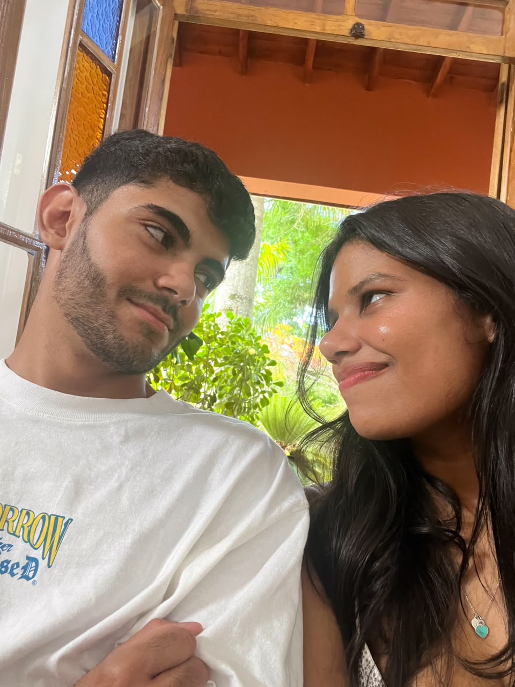
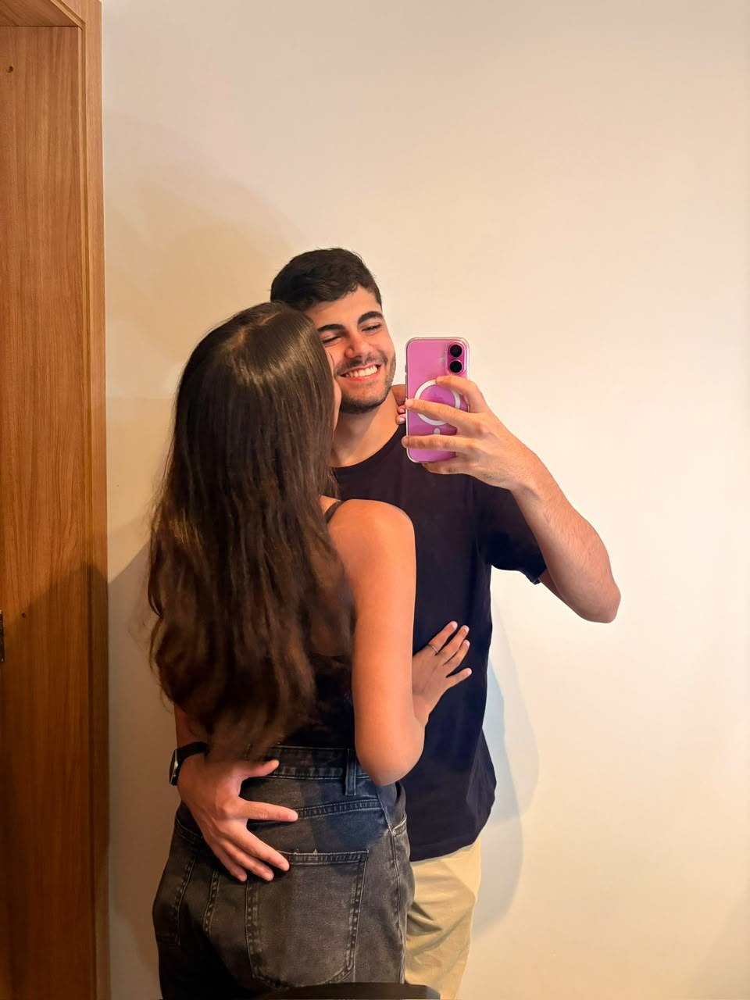
02 — Todo dia é especial
Não existe distância boa quando é longe de você.
A gente não se desgruda, porque a vida fica mais leve, mais divertida e mais bonita quando é compartilhada. Até nos dias simples, com você, tudo vira memória.
♥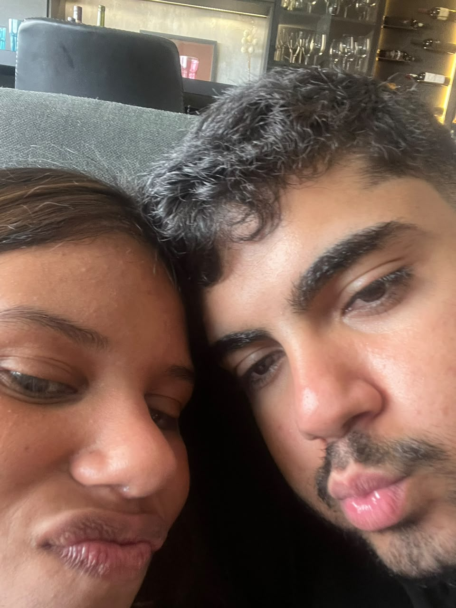
“Você é a coisa mais importante da minha vida.”
03 — A nossa aventura
Daqui para
o mundo.
Em julho, tivemos o privilégio de realizar juntos uma viagem inesquecível para a Argentina, de conhecer a neve e guardar paisagens que parecem de sonho. Mas a verdade é que a melhor parte de qualquer lugar sempre foi ter você comigo.
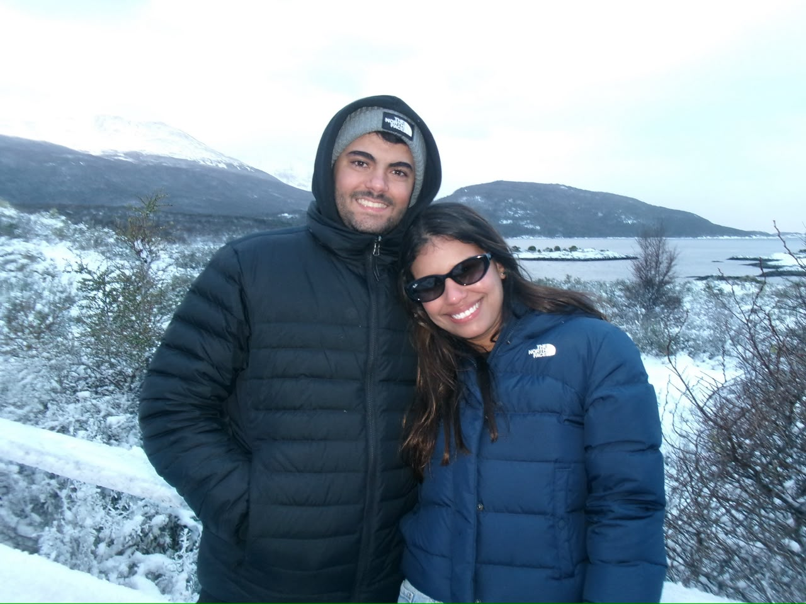
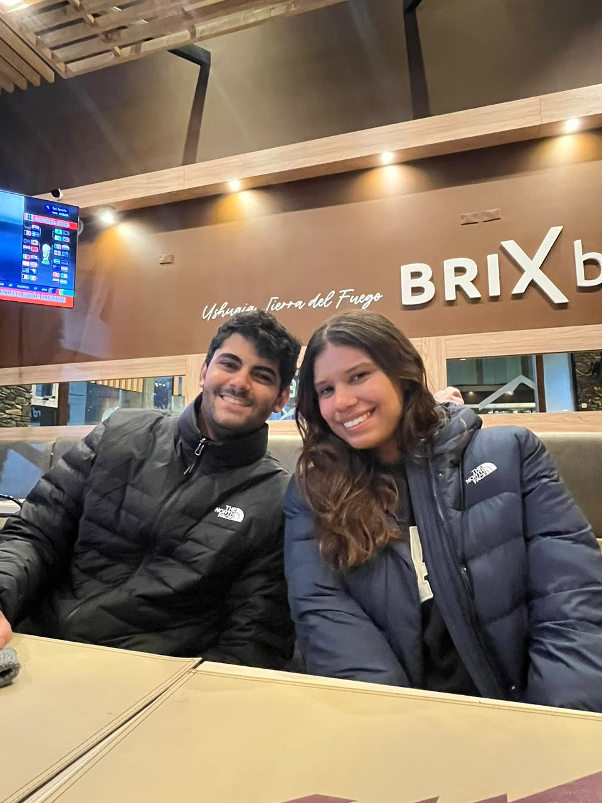
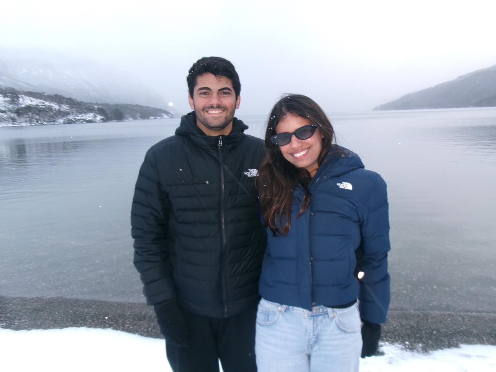
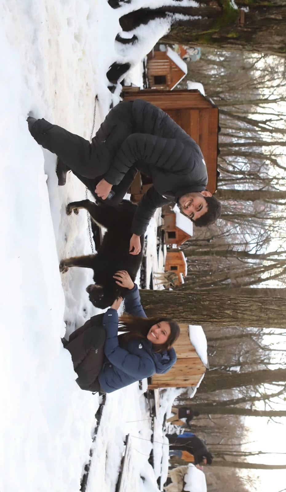
Argentina, julho ✦
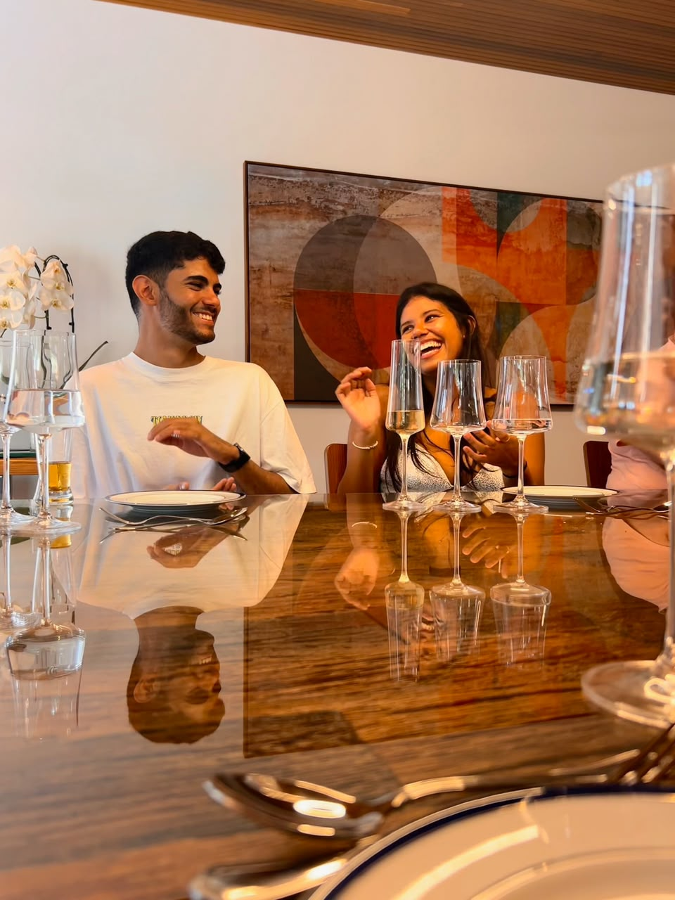
04 — Nosso amor também é casa
Dois corações,
duas famílias.
É lindo saber que a minha família ama você e que a sua me acolheu de coração. O nosso amor encontrou espaço, abraço e torcida em todos que amamos — e isso só faz eu ter ainda mais certeza de nós.
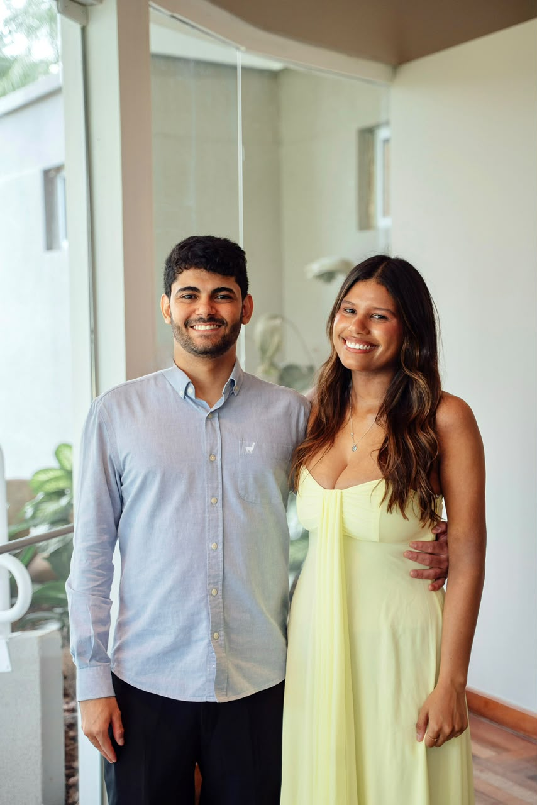
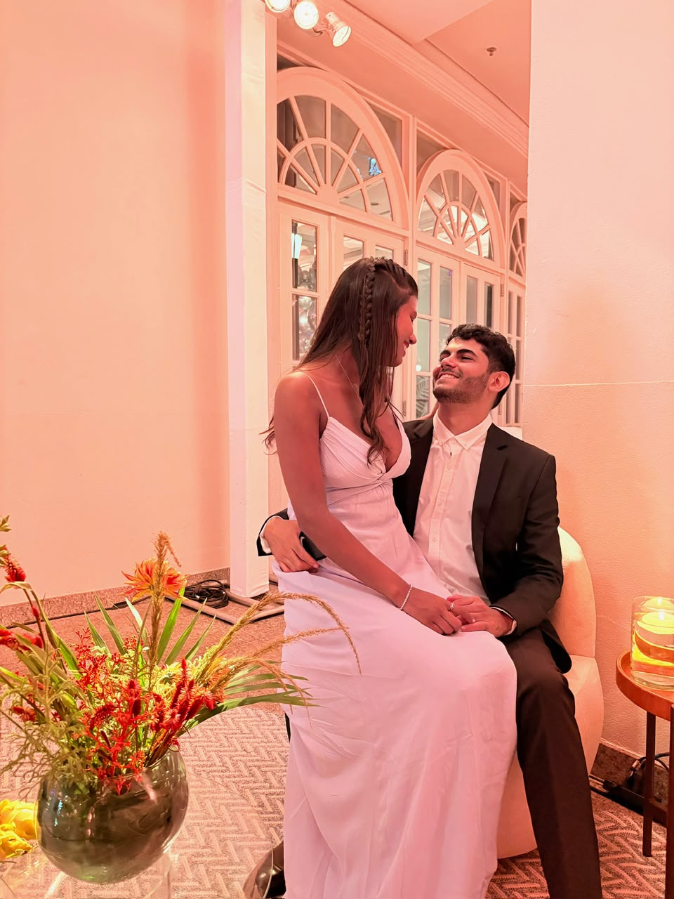
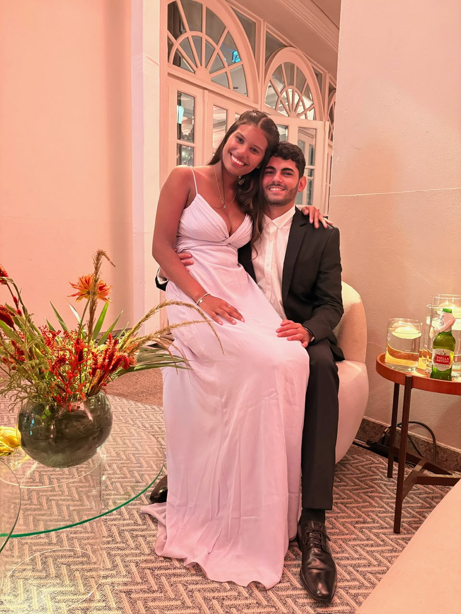
Para sempre começa todos os dias
Meu amor,
Obrigado por cada sorriso, cada abraço apertado, cada viagem, cada conversa e cada momento que só faz sentido porque é com você. Eu não trocaria nada neste mundo por você. Você é tudo para mim.
Hoje celebramos dois anos de namoro, mas o que eu mais celebro é poder escolher você todos os dias. Quero viver muitos sonhos ao seu lado, construir nossa história e te amar em cada capítulo que ainda vem pela frente.
Eu te amo. Para sempre nós. ♥